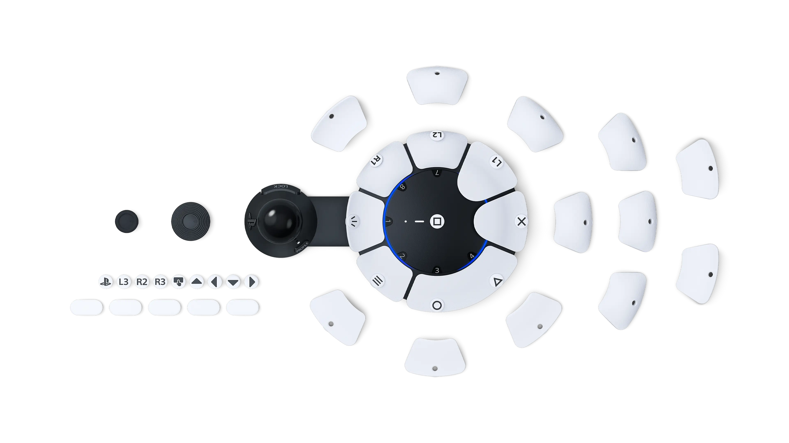
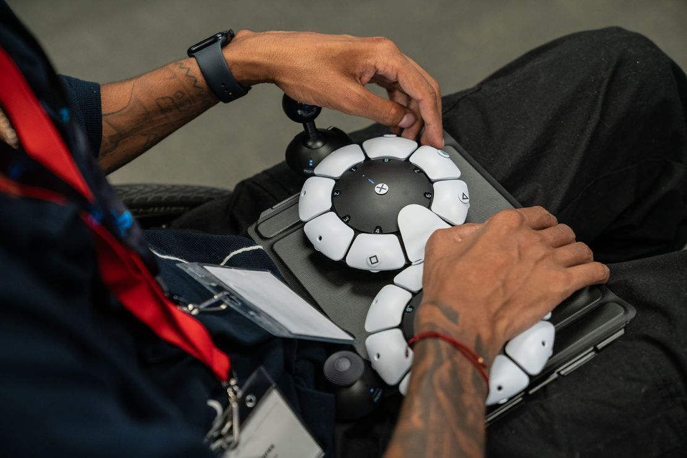
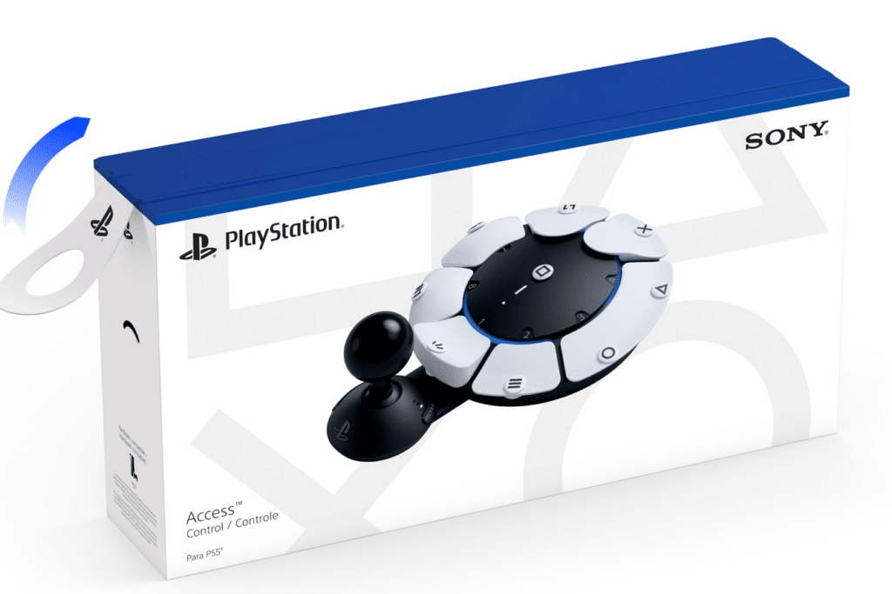

Qué es el Access Controller
El PlayStation Access Controller (antes conocido como Project Leonardo, su nombre en desarrollo) es un mando para PlayStation 5 con un enfoque muy distinto al de un mando convencional. Es un disco de unos 14 × 19 cm y 322 g, con un joystick y botones de gran tamaño que pueden cambiarse de forma, de posición y de función. Se conecta por cable USB-C y puede usarse solo o combinado con otros mandos.
Sony lo desarrolló con la colaboración de organizaciones y personas con discapacidad, como AbleGamers, SpecialEffect y Stack Up. Su precio de lanzamiento fue de 89,99 €, y se vende como un kit con todo lo necesario para configurarlo.
El problema de accesibilidad que viene a resolver
Un mando estándar (como el DualSense) presupone que la persona tiene dos manos con buena movilidad: sostenerlo con ambas, pulsar botones pequeños con precisión, usar los dedos a la vez en gatillos, botones y sticks, y mantener el agarre durante horas. Esa suposición deja fuera a muchas personas.
A quién ayuda
- Personas con discapacidad motriz: parálisis cerebral, lesiones medulares, distrofia muscular, esclerosis múltiple, artritis…
- Personas con movilidad reducida en manos, brazos o dedos, o con poca fuerza o poca resistencia a la fatiga.
- Personas que solo pueden usar una mano, o que han sufrido una amputación o tienen una diferencia de extremidades.
- Jugadores que necesitan apoyar el mando en una mesa, una silla de ruedas o un soporte, o usarlo con otra parte del cuerpo (codo, antebrazo, pie…).
- Personas mayores, niños con manos pequeñas y cualquier persona con una limitación temporal (una lesión, por ejemplo).
Qué barreras elimina
- Alcance: los botones se pueden colocar donde la persona sí llega, y se pueden desactivar los que molestan.
- Fuerza y precisión: botones grandes y sensibilidad del stick ajustable.
- Postura: funciona en cualquier orientación (360°) y puede fijarse a soportes estándar.
- Simultaneidad: permite repartir las acciones entre varios mandos o botones externos y así evitar pulsaciones simultáneas imposibles.
- Pulsaciones accidentales: cualquier botón puede deshabilitarse.
- Dependencia de terceros: hasta el embalaje está pensado para poder abrirse con facilidad.
En resumen: antes de este mando, jugar a PlayStation exigía adaptarse al mando. Con el Access Controller, el mando se configura para adaptarse a las capacidades de cada persona.
Por qué lo he elegido y qué beneficios aporta
He elegido este dispositivo porque es un ejemplo muy claro de que la interacción persona-ordenador consiste en diseñar para las personas reales, con sus diferencias, y no para un usuario medio que no existe. Es además un producto muy reciente (finales de 2023) y de una empresa de gran alcance, lo que lo convierte en un paso importante: la accesibilidad llega al mercado masivo y deja de ser un nicho.
- Inclusión: permite jugar, y con ello disfrutar del ocio y socializar, a personas que antes quedaban excluidas.
- Personalización: cada persona crea la disposición de botones que mejor encaja con su cuerpo.
- Autonomía: la configuración la hace la propia persona desde los ajustes de la consola, sin necesitar modificar el hardware ni comprar piezas especiales.
- Comodidad y menor fatiga: reduce el esfuerzo físico y permite sesiones de juego más largas.
- Escalabilidad: se puede ampliar con botones externos y combinarse con otros mandos según la necesidad.
- Diseño participativo: se creó con la colaboración de personas usuarias con discapacidad, que es la mejor forma de acertar con las necesidades reales.
Características principales
Piezas intercambiables
El kit incluye tres tapas para el joystick (estándar, de cúpula y de bola) y 19 tapas para botones de varias formas: ocho de almohadilla, cuatro planas, cuatro curvas, dos de saliente y una plana ancha. Las de saliente quedan más cerca del centro (útiles con manos pequeñas) y las curvas pueden empujarse o tirar de ellas según su posición. Cada botón se identifica con una de las 23 etiquetas intercambiables, para recordar qué hace.
Configuración y perfiles
Cada botón puede asignarse a cualquier acción, o desactivarse. Se pueden guardar hasta 30 perfiles en la consola (por ejemplo, uno para cada juego) y tener tres perfiles almacenados en el propio mando, con un botón dedicado para cambiar entre ellos rápidamente. También se ajustan la sensibilidad y la zona muerta del stick, y se calibra la dirección «norte» del mando para poder colocarlo en la orientación que se necesite.
Ampliable
Tiene cuatro puertos de 3,5 mm a los que se conectan pulsadores externos, gatillos especiales y otros accesorios compatibles. Pueden usarse dos Access Controller como si fueran un único mando virtual, o combinarse con un DualSense o DualSense Edge para sumar funciones como vibración háptica o gatillos adaptativos.
Posición libre
Se puede utilizar apoyado en una superficie plana, en cualquier orientación, o sujeto a un soporte con el patrón estándar AMPS.
Datos técnicos resumidos
- Fabricante
- Sony Interactive Entertainment
- Lanzamiento
- 6 de diciembre de 2023
- Plataforma
- PlayStation 5
- Conexión
- Cable USB-C (1,5 m aprox.)
- Dimensiones
- Aprox. 141 × 39 × 191 mm
- Peso
- Aprox. 322 g
- Puertos de expansión
- 4 puertos de 3,5 mm
- Perfiles
- 30 en la consola, 3 en el mando
Qué sustituye y cómo lo mejora
Los mandos tradicionales de consola (desde los primeros joysticks y mandos de cruceta hasta el DualShock y el DualSense) fueron ganando botones, sticks y gatillos, pero siempre con una forma y una disposición fijas y pensadas para dos manos con buena movilidad. Para jugar con una discapacidad había que recurrir a modificaciones artesanales o a soluciones externas caras y poco compatibles.
El Access Controller sustituye a esas soluciones con un único dispositivo oficial, modular y configurable por la propia persona:
| Aspecto | Mando convencional | Access Controller |
|---|---|---|
| Agarre y posición | Se sujeta con las dos manos | Se apoya en una superficie o soporte, en cualquier orientación |
| Botones | Pequeños y fijos | Grandes, intercambiables y movibles |
| Funciones | Limitadas | Cualquier botón hace cualquier acción, o se desactiva |
| Accesorios | Casi ninguno | 4 puertos para pulsadores externos |
| Configuración | Soldaduras o ayuda técnica | La propia persona, desde la consola |
Relación con la Interacción Persona-Ordenador
El Access Controller es un dispositivo de entrada y encaja con varios principios de la IPO que hemos visto en la asignatura:
- Diseño centrado en el usuario
- Se diseñó con la participación de personas con discapacidad, y no solo para ellas.
- Accesibilidad y diseño universal
- Reduce barreras físicas para que más personas puedan usar el sistema, lo que además beneficia a todos (un botón grande también se pulsa mejor con poco tiempo o fatiga).
- Adaptabilidad y personalización
- La interfaz se ajusta a cada persona y a cada tarea, en lugar de exigir que cada persona se ajuste a ella.
- Affordances y significantes
- Las formas de los botones (plana, curva, de saliente…) indican cómo se pulsan, y las etiquetas permiten identificar su función sin tener que memorizarla.
- Mapeo y retroalimentación
- La persona decide la correspondencia entre su acción física y el resultado en pantalla, y puede conservar la retroalimentación háptica al combinarlo con un DualSense.
- Carga física y ergonomía
- Disminuye el esfuerzo y la fatiga, y deja que cada persona elija su postura.
- Dispositivos de entrada alternativos
- Admite pulsadores externos y otros periféricos, lo que abre la puerta a muy diversas formas de interacción.
- Ley de Fitts
- El tiempo para alcanzar un objetivo depende de su tamaño y de su distancia. Con botones grandes y colocados donde la persona llega, se acierta antes y con menos esfuerzo.
- Reconocimiento mejor que memoria
- Las etiquetas junto a cada botón evitan tener que recordar qué hace cada uno, lo que reduce la carga mental.
- Usabilidad: efectividad, eficiencia y satisfacción
- Permite lograr el objetivo (jugar), con menos esfuerzo y con más comodidad, que es lo que mide la norma ISO 9241-11.
Los 7 principios del diseño universal
- Uso equitativo: pone el juego al alcance de personas con distintas habilidades motrices.
- Flexibilidad de uso: botones y joystick se reubican, y se puede usar con una mano o con accesorios.
- Uso simple e intuitivo: las formas y las etiquetas indican qué hace cada botón.
- Información perceptible: las etiquetas identifican cada función y la consola muestra los ajustes en pantalla.
- Tolerancia al error: cualquier botón se puede desactivar para evitar pulsaciones accidentales.
- Bajo esfuerzo físico: no hay que sujetarlo y los botones grandes piden menos fuerza y precisión.
- Tamaño y espacio para el acceso y uso: se usa en cualquier orientación, sobre una mesa, en una silla de ruedas o en un soporte.
Galería



Accesibilidad de esta web
Esta página aplica los cuatro principios de las pautas WCAG:
- Perceptible
- Todas las fotos tienen texto alternativo. El contraste es alto, hay modo oscuro automático y la información no depende solo del color. La letra es clara y se puede ampliar.
- Operable
- Se maneja solo con teclado, con un enlace para saltar el menú y un foco muy visible. Los enlaces y botones son grandes y fáciles de alcanzar.
- Comprensible
- Títulos ordenados, frases cortas, secciones pequeñas con espacio en blanco y el mismo orden en todas ellas. El idioma está declarado.
- Robusto
- Usa etiquetas HTML estándar y no necesita JavaScript, así que funciona con lectores de pantalla y distintos navegadores. Solo hay una tabla, sencilla y con encabezados asociados a sus celdas, porque se usa únicamente para comparar datos.
Más información
- Página oficial del Access Controller (PlayStation.com) (se abre en una pestaña nueva)
- PlayStation Blog: noticias sobre el Access Controller y la accesibilidad (se abre en una pestaña nueva)
- PlayStation y la accesibilidad (se abre en una pestaña nueva)
- AbleGamers, organización colaboradora (se abre en una pestaña nueva)
- SpecialEffect, organización colaboradora (se abre en una pestaña nueva)